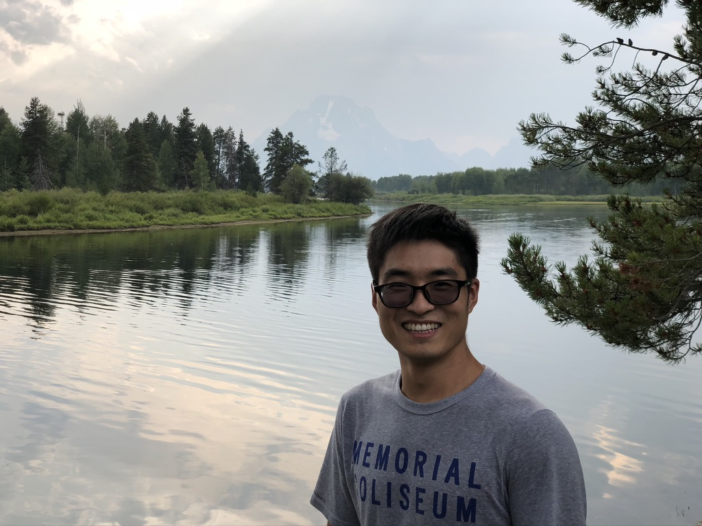

2026 - 副教授，哈尔滨工程大学数学科学学院
2024 - 2025 博士后，南方科技大学深圳国际数学中心
2022 - 2023 博士后，中国科学技术大学
2015 - 2021 硕博连读，中国科学技术大学 (2017 - 2019 联合培养博士，Kansas 州立大学)
2011 - 2015 本科，扬州大学

Associate Professor
School of Mathematical Sciences,
Harbin Engineering University,
145 Nantong Street, Nangang District,
150001 Harbin, P. R. China
中国黑龙江省哈尔滨市南岗区南通大街145号，150001
哈尔滨工程大学，数学科学学院
Office 办公室: Yifu Building Room 416 - 逸夫楼416房间
Email 邮箱: xpliu[(a)]hrbeu.edu.cn
Liu X., A note on parabolic Verma module homomorphisms over Kac-Moody algebras, J. Pure Appl. Algebra, 226(2022): 1-14, DOI: 10.1016/j.jpaa.2021.106868
Chen H., Gao Y., Liu X., Wang L., U^0-free quantum group representations, J. Algebra, 642 (2023): 330–366, DOI: 10.1016/j.jalgebra.2023.11.037
Liu X., On multiplicity-free weight modules over quantum affine algebras, Pacific J. Math. 330 (2024): 251–282, DOI: 10.2140/pjm.2024.330.251
Chen H., Dai H., Liu X., A class of polynomial modules over current algebras, Commun. Math. Stat. 13(2025): 1219–1239, DOI: 10.1007/s40304-023-00356-4
Chen H., Dai H., Liu X., Zhao Q., Tensor products of infinite-dimensional evaluation modules over the Yangian Y(sl2), J. Algebra, 692(2026), 627–652, DOI: 10.1016/j.jalgebra.2026.01.001
Dai H., Liu X., Highest weight modules, tensor products and cyclicity over current Virasoro algebra, J. Lie Theory (accepted).
Futorny V., Liu X., Dimension growth and Gelfand-Kirillov dimensions of irreducible representations of quantum groups, arXiv: 2512.14385.
Find my papers on arXiv | ORCID: 0000-0001-5301-4199